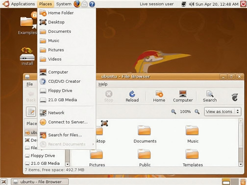

Linux (pronounced LINN-ux) is a family of open-source operating systems, which means they can be modified and distributed by anyone around the world. This is different from proprietary software like Windows, which can only be modified by the company that owns it. The advantages of Linux are that it is free, and there are many different distributions you can choose from. According to StatCounter Global Stats, Linux users account for less than 2% of global operating systems. However, most servers run Linux because it's relatively easy to customize. this operating system is created by Finnish in the early of 1990s While still a student at the University of Helsinki, Torvalds started developing Linux to create a system similar to MINIX, a UNIX operating system. In 1991 he released version 0.02; Version 1.0 of the Linux kernel, the core of the operating system, was released in 1994. About the same time, American software developer Richard Stallman and the FSF made efforts to create an open-source UNIX-like operating system called GNU. In contrast to Torvalds, Stallman and the FSF started by creating utilities for the operating system first. These utilities were then added to the Linux kernel to create a complete system called GNU/Linux, or, less precisely, just Linux. Linux grew throughout the 1990s because of the efforts of hobbyist developers. Although Linux is not as user-friendly as the popular Microsoft Windows and Mac OS operating systems. it is an efficient and reliable system that rarely crashes. Combined with Apache, an open-source Web server, Linux accounts for more than a third of all servers used on the Internet. Because it is open source, and thus modifiable for different uses. Linux is popular for systems as diverse as cellular telephones and supercomputers. The addition of user-friendly desktop environments, office suites, Web browsers, and even games helped to increase Linux’s popularity and make it more suitable for home and office desktops. New distributions (packages of Linux software) were created throughout the 1990s. Some of the more well-known distributions include Red Hat, Debian, and Slackware.
